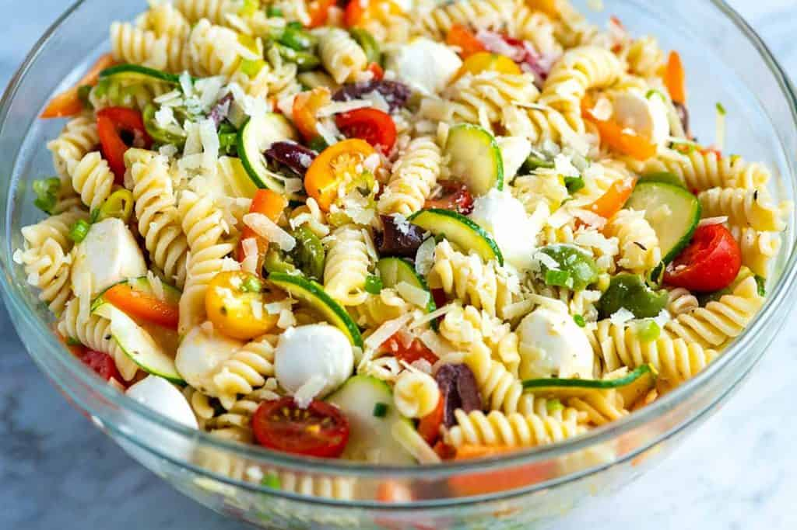

The best Pasta Salad is Here!

Quick and Easy Pasta Salad
Fresh and easy pasta salad packed with crisp vegetables, fresh mozzarella, and tossed with a simple homemade dressing. The perfect side dish!
ingredients
PASTA SALAD
- 1 pound dried pasta like fusilli, penne, rotini or farfalle (bow tie)
- 1 cup sliced bell pepper (1 medium)
- 1 cup thinly sliced zucchini (1/2 medium)
- 1/3 cup thinly sliced scallions (5 to 6)
- 1/4 cup sliced pepperoncini or banana peppers, optional
- 1 cup (4 ounces) halved mixed olives
- 1 cup (2 ounces) grated parmesan cheese or hard cheese
- 1 cup (6 ounces) fresh mozzarella balls, chopped
- 1/3 cup fresh parsley or basil, optional
HOMEMADE DRESSING
- 1/3 cup red wine vinegar, white wine vinegar or champagne vinegar
- 1/2 teaspoon fine sea salt, plus more to taste
- 1/2 teaspoon fresh ground black pepper
- 1/2 teaspoon dried oregano
- 2 to 3 tablespoons juice from pepperoncini jar, optional
- 1/2 cup extra-virgin olive oil
Steps
- Bring a large pot of salted water to a boil. Add pasta and cook until tender, 6 to 10 minutes (check the package for recommended cook time). Drain and rinse well under cold water.
- While the pasta cooks, in the bottom of a large bowl, make the dressing. Whisk the red wine vinegar, salt, pepper, oregano, pepperoncini juice (if using), and the olive oil until blended. Add the drained and rinsed pasta to the dressing and mix well.
- Stir in the bell pepper, zucchini, tomatoes, scallions, pepperoncini (if using), olives, parmesan, mozzarella, and the herbs (if using). Taste for seasoning and adjust with salt and pepper as needed. Serve or for the best results, cover and refrigerate at least 30 minutes and up to 5 days.